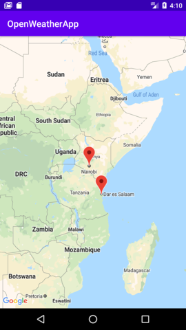

When you first open the app you will see a button with the plus sign. Click on it and you will be redirected to the map page
On the map page scroll and zoom to the city you would like to bookmark. Click it and a marker will appear
To go back click on the back button
Once you navigate back to the home page you will see the list of cities you bookmarked. Click on a city to see the forecase for today and the next five days